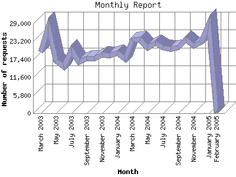

Analog 5.32
Analog 5.32 Report Magic 2.16
Report Magic 2.16The Monthly Report identifies activity for each month in the report
time frame. Remember that each page hit can result in several server requests
as the images for each page are loaded.
Note: Depending on the
report time frame, the first and last months may not represent a complete
month's worth of data, resulting in lower hits.

| Month | Number of requests | Number of page requests | |
|---|---|---|---|
| 1. | February 2005 | 101 | 85 |
| 2. | January 2005 | 28,898 | 12,162 |
| 3. | December 2004 | 22,840 | 10,123 |
| 4. | November 2004 | 21,657 | 10,047 |
| 5. | October 2004 | 23,928 | 11,026 |
| 6. | September 2004 | 21,128 | 9,384 |
| 7. | August 2004 | 20,714 | 11,291 |
| 8. | July 2004 | 21,185 | 10,248 |
| 9. | June 2004 | 22,749 | 10,038 |
| 10. | May 2004 | 21,136 | 8,969 |
| 11. | April 2004 | 23,824 | 9,820 |
| 12. | March 2004 | 23,652 | 9,881 |
| 13. | February 2004 | 17,578 | 7,629 |
| 14. | January 2004 | 19,507 | 7,946 |
| 15. | December 2003 | 18,659 | 8,719 |
| 16. | November 2003 | 18,960 | 8,858 |
| 17. | October 2003 | 17,679 | 7,496 |
| 18. | September 2003 | 17,698 | 7,272 |
| 19. | August 2003 | 16,582 | 6,727 |
| 20. | July 2003 | 20,379 | 9,012 |
| 21. | June 2003 | 15,046 | 6,480 |
| 22. | May 2003 | 17,063 | 7,490 |
| 23. | April 2003 | 28,020 | 12,756 |
| 24. | March 2003 | 19,824 | 9,281 |
Most active month April 2003 : 12,756 pages sent.
Monthly average: 8,864 pages sent. 19,950 requests handled.
This report was generated on March 2, 2005 10:49.
Report time frame March 9, 2003 20:57 to February 15, 2005 03:11.
| Web statistics report produced by: | |
| Analog 5.32 | Report Magic 2.16 |